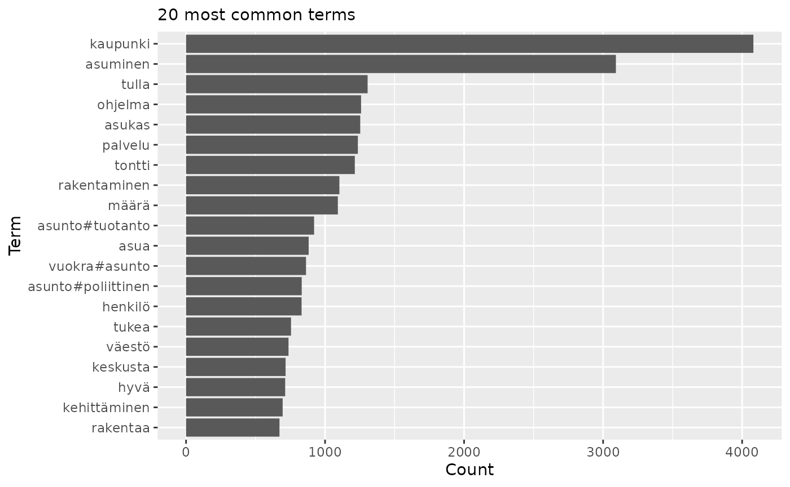
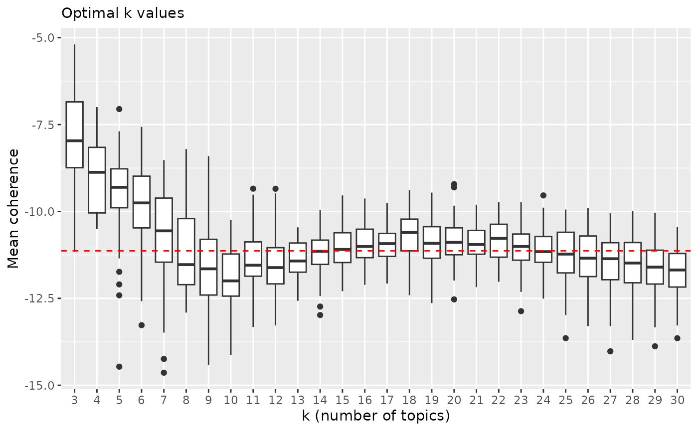
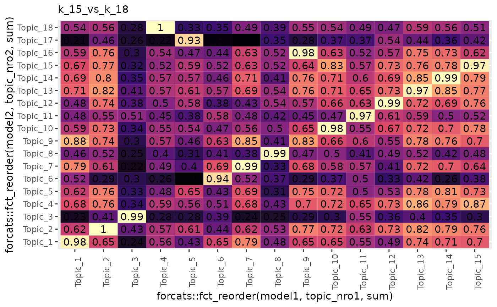
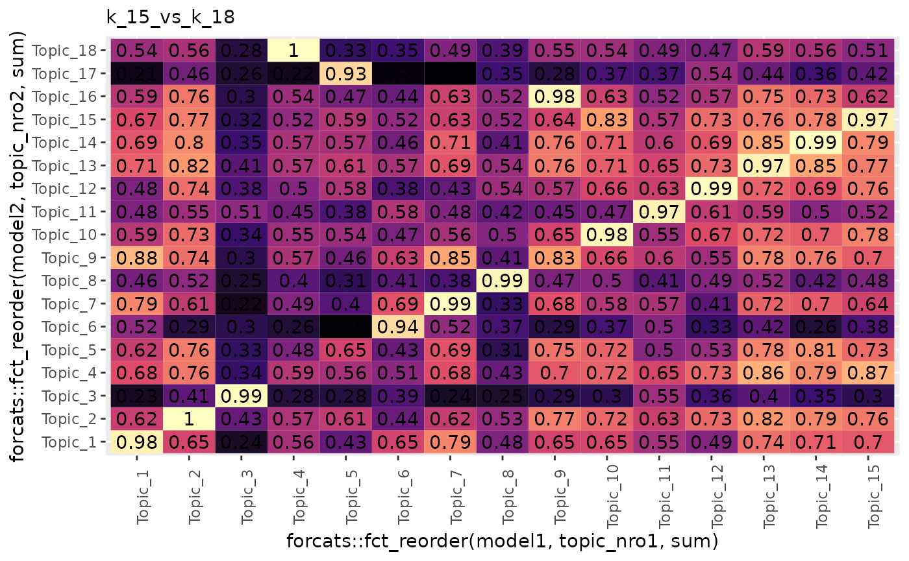
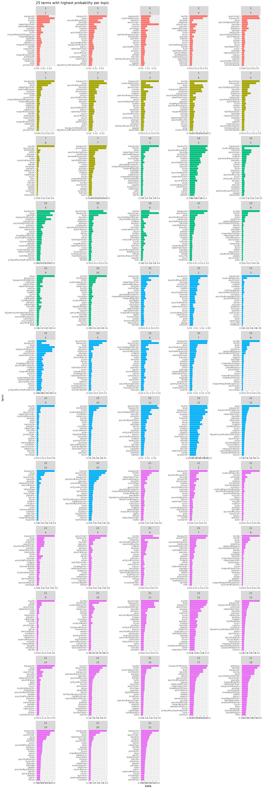
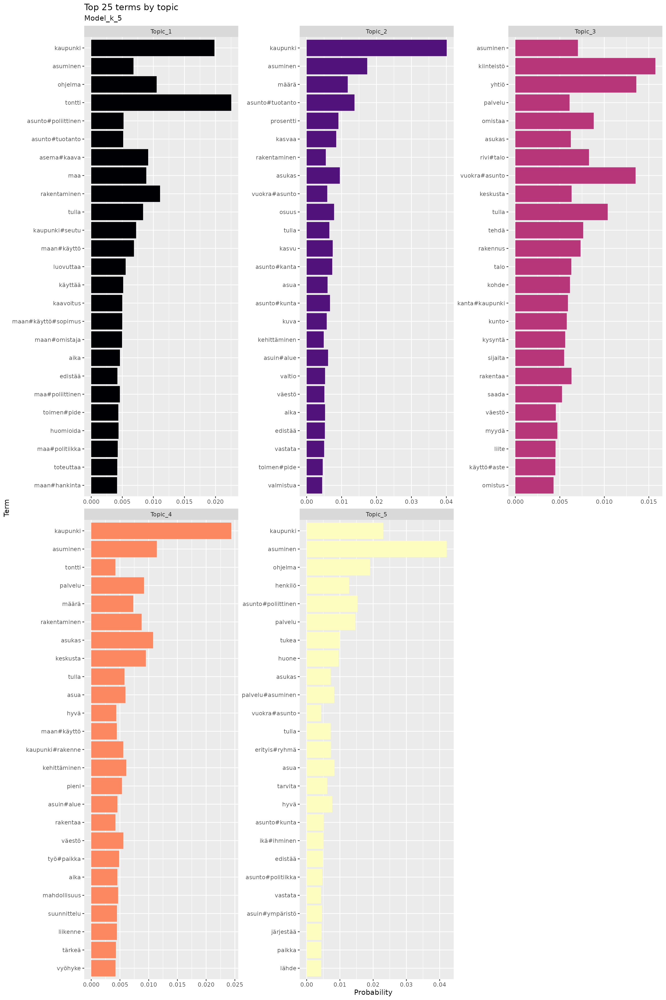
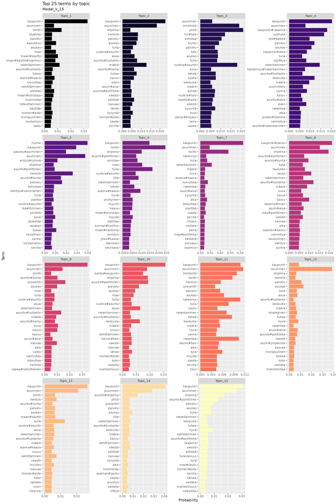

Topic modeling with latent Dirichlet allocation (LDA). Finding optimal k-parameter. Using coherence score as a value of goodness.
library(rfintext)
library(rfinstats)
library(quanteda)
library(tidytext)
library(topicmodels)
library(topicdoc)
library(dplyr)
library(tidyr)
library(ggplot2)
# library(DT)
library(kableExtra)
library(doFuture)
plan(multisession, workers = availableCores(logical = FALSE) - 1)
dtm <- aspol |>
preprocess_corpus() |>
corpus_to_dtm(kunta, LEMMA)
dtm
#> Document-feature matrix of: 68 documents, 3,061 features (76.78% sparse) and 0 docvars.
#> features
#> docs A#talo III Vapaa#aika aiheuttaa aika aika#väli ajatella ala alhainen alku alku#peräinen alku#puoli antaa arava#laina arava#rajoitus arvioida asettaa asia asiakas asian#mukainen
#> Enontekiö 3 1 1 3 7 1 1 1 1 1 1 1 3 1 1 1 2 3 3 1
#> Espoo 0 0 0 1 18 3 0 3 4 1 1 0 2 0 0 9 10 3 1 0
#> Eura 0 0 0 1 5 0 0 0 1 0 0 0 1 0 0 3 1 1 6 0
#> Hartola 0 0 1 2 5 0 0 1 0 0 0 0 0 0 0 3 0 0 0 0
#> Hattula 0 0 0 0 6 0 0 0 0 1 0 0 1 0 0 0 1 1 0 0
#> Helsinki 0 0 0 3 46 4 0 5 5 12 0 1 7 0 0 26 13 8 6 1
#> Huittinen 2 0 0 0 13 1 5 2 2 0 0 0 3 0 0 4 3 13 4 0
#> Hyvinkää 0 0 0 0 1 0 0 0 0 0 0 0 0 0 0 1 0 0 0 0
#> Hämeenlinna 0 0 3 3 1 0 0 2 0 1 0 0 3 0 0 2 0 29 3 0
#> Iitti 0 0 0 0 0 0 0 0 0 1 0 0 5 0 0 0 1 0 0 0
#> Imatra 0 0 0 0 2 0 0 1 0 0 0 0 0 0 0 2 0 1 0 0
#> Inkoo 0 0 0 1 11 1 0 0 1 2 0 0 4 0 0 0 5 2 0 0
#> Joensuu 0 0 0 1 33 2 1 0 4 4 1 0 2 0 1 9 13 5 4 0
#> Juva 0 0 0 2 13 5 0 1 2 3 0 0 2 1 0 1 2 2 3 0
#> Järvenpää 0 0 0 0 2 0 0 0 0 0 0 0 1 0 0 0 3 2 0 0
#> Kaarina 0 0 1 2 15 6 0 0 0 1 0 0 4 0 0 4 4 3 0 0
#> Kalajoki 0 0 0 0 1 0 0 0 0 0 0 0 0 0 0 2 0 0 0 0
#> Kauniainen 0 0 0 2 14 0 1 0 0 1 0 1 4 0 0 12 6 1 3 0
#> Kemiönsaari 0 0 3 3 12 1 1 1 1 3 2 0 14 0 0 3 3 1 2 0
#> Kerava 0 0 0 2 0 0 0 0 0 0 0 0 3 0 0 2 5 0 0 0
#> [ reached max_ndoc ... 48 more documents, reached max_nfeat ... 3,041 more features ]
topfeatures(dtm, n = 20) |>
as_tibble(rownames = "term") |>
ggplot(aes(x = value, y = reorder(term, value))) +
geom_col() +
labs(subtitle = "20 most common terms", x = "Count", y = "Term")
LDA needs one parameter k. Finding optimal values by
evaluating coherence score.
k_values <- c(seq(2, 70, by = 1))
system.time(
model_coherence <- foreach(k = k_values, .combine = 'rbind', .inorder = FALSE) %dofuture% {
lda <- topicmodels::LDA(quanteda::convert(dtm, to = "tm"), k = k, control = list(seed = 1234))
mean_coherence <- mean(topicdoc::topic_coherence(lda, dtm))
data_frame(k = k, mean_coherence = mean_coherence)
}
) # Around 30 min.
#> user system elapsed
#> 70.737 1.968 2210.170
# save(model_coherence, file = "./extdata/model_coherence.rda") # Does not work!!??
# usethis::use_data(model_coherence)
p <- model_coherence |>
ggplot(aes(x = k, y = mean_coherence)) +
geom_line() +
labs(subtitle = "LDA model coherence with different topic numbers",
x = "k (number of topics)", y = "Mean coherence")
p
Visually selecting potentially best k values
optimal_k <- c(5, 15, 18, 21)
p +
geom_vline(xintercept = optimal_k, linetype='dashed', color=c('red')) +
lapply(optimal_k, function(x) {geom_text(aes(x=x+1, label=x, y=-5), colour="red", angle=90)}) +
labs(subtitle = "Optimal k values",
x = "k (number of topics)", y = "Mean coherence")
#> Warning in geom_text(aes(x = x + 1, label = x, y = -5), colour = "red", : All aesthetics have length 1, but the data has 69 rows.
#> ℹ Did you mean to use `annotate()`?
#> All aesthetics have length 1, but the data has 69 rows.
#> ℹ Did you mean to use `annotate()`?
#> All aesthetics have length 1, but the data has 69 rows.
#> ℹ Did you mean to use `annotate()`?
#> All aesthetics have length 1, but the data has 69 rows.
#> ℹ Did you mean to use `annotate()`?
Highest coherence values: 5, 15, 18, 21
lda_models <- foreach(k = optimal_k) %dofuture% {
topicmodels::LDA(quanteda::convert(dtm, to = "tm"), k = k, control = list(seed = 1234))
}
names(lda_models) <- paste0("k_", optimal_k)
beta_matrix <- bind_rows(
lapply(lda_models, function(x) {
tidytext::tidy(x, matrix = "beta")
}),
.id = "model")
beta_matrix
#> # A tibble: 180,599 × 4
#> model topic term beta
#> <chr> <int> <chr> <dbl>
#> 1 k_5 1 A#talo 1.08e-11
#> 2 k_5 2 A#talo 1.47e-19
#> 3 k_5 3 A#talo 3.55e- 4
#> 4 k_5 4 A#talo 1.51e-14
#> 5 k_5 5 A#talo 2.72e-10
#> 6 k_5 1 III 6.04e-95
#> 7 k_5 2 III 1.54e-95
#> 8 k_5 3 III 3.94e- 5
#> 9 k_5 4 III 1.27e-82
#> 10 k_5 5 III 1.14e-93
#> 11 k_5 1 Vapaa#aika 1.05e- 4
#> 12 k_5 2 Vapaa#aika 6.92e-16
#> 13 k_5 3 Vapaa#aika 4.73e- 4
#> 14 k_5 4 Vapaa#aika 1.42e- 4
#> 15 k_5 5 Vapaa#aika 7.14e- 4
#> 16 k_5 1 aiheuttaa 1.05e- 3
#> 17 k_5 2 aiheuttaa 4.92e- 4
#> 18 k_5 3 aiheuttaa 1.12e- 3
#> 19 k_5 4 aiheuttaa 1.89e- 4
#> 20 k_5 5 aiheuttaa 1.70e- 4
#> 21 k_5 1 aika 4.62e- 3
#> 22 k_5 2 aika 5.27e- 3
#> 23 k_5 3 aika 3.66e- 3
#> 24 k_5 4 aika 4.55e- 3
#> 25 k_5 5 aika 8.22e- 4
#> # ℹ 180,574 more rows
topic_congruence <- beta_matrix |>
pivot_wider(values_from = beta, names_from = topic) |>
rename_with(~paste0("Topic_", .), where(is.numeric)) |>
select(-term)
topic_congruence
#> # A tibble: 12,244 × 22
#> model Topic_1 Topic_2 Topic_3 Topic_4 Topic_5 Topic_6 Topic_7 Topic_8
#> <chr> <dbl> <dbl> <dbl> <dbl> <dbl> <dbl> <dbl> <dbl>
#> 1 k_5 1.08e-11 1.47e-19 0.000355 1.51e-14 2.72e-10 NA NA NA
#> 2 k_5 6.04e-95 1.54e-95 0.0000394 1.27e-82 1.14e-93 NA NA NA
#> 3 k_5 1.05e- 4 6.92e-16 0.000473 1.42e- 4 7.14e- 4 NA NA NA
#> 4 k_5 1.05e- 3 4.92e- 4 0.00112 1.89e- 4 1.70e- 4 NA NA NA
#> 5 k_5 4.62e- 3 5.27e- 3 0.00366 4.55e- 3 8.22e- 4 NA NA NA
#> 6 k_5 8.04e- 4 5.01e- 4 0.000366 4.75e- 4 7.02e- 4 NA NA NA
#> 7 k_5 1.04e- 4 1.86e- 5 0.000138 7.25e- 4 1.04e- 4 NA NA NA
#> 8 k_5 2.54e- 5 2.88e- 4 0.000501 5.84e- 4 1.37e- 8 NA NA NA
#> 9 k_5 3.42e- 5 5.25e- 4 0.000952 4.34e- 5 3.26e- 5 NA NA NA
#> 10 k_5 8.09e- 4 8.03e- 4 0.000667 1.09e- 3 1.96e- 4 NA NA NA
#> # ℹ 12,234 more rows
#> # ℹ 13 more variables: Topic_9 <dbl>, Topic_10 <dbl>, Topic_11 <dbl>,
#> # Topic_12 <dbl>, Topic_13 <dbl>, Topic_14 <dbl>, Topic_15 <dbl>,
#> # Topic_16 <dbl>, Topic_17 <dbl>, Topic_18 <dbl>, Topic_19 <dbl>,
#> # Topic_20 <dbl>, Topic_21 <dbl>
k_5_k_15 <- cor(topic_congruence[topic_congruence$model=="k_5", 2:6], topic_congruence[topic_congruence$model=="k_15", 2:16])
k_5_k_18 <- cor(topic_congruence[topic_congruence$model=="k_5", 2:6], topic_congruence[topic_congruence$model=="k_18", 2:19])
k_5_k_21 <- cor(topic_congruence[topic_congruence$model=="k_5", 2:6], topic_congruence[topic_congruence$model=="k_21", 2:22])
k_15_k_18 <- cor(topic_congruence[topic_congruence$model=="k_15", 2:16], topic_congruence[topic_congruence$model=="k_18", 2:19])
k_15_k_21 <- cor(topic_congruence[topic_congruence$model=="k_15", 2:16], topic_congruence[topic_congruence$model=="k_21", 2:22])
k_18_k_21 <- cor(topic_congruence[topic_congruence$model=="k_18", 2:19], topic_congruence[topic_congruence$model=="k_21", 2:22])
topic_correlation <- list(k_5_k_15, k_5_k_18, k_5_k_21, k_15_k_18, k_15_k_21, k_18_k_21)
names(topic_correlation) <- c("k_5_vs_k_15", "k_5_vs_k_18", "k_5_vs_k_21", "k_15_vs_k_18", "k_15_vs_k_21", "k_18_vs_k_21")
for (i in seq_along(topic_correlation)) {
print(
pivot_longer(as_tibble(topic_correlation[[i]], rownames = "model1"), !model1, names_to = "model2", values_to = "correlation") |>
mutate(topic_nro1 = as.integer(stringr::str_extract(model1, "\\d+")),
topic_nro2 = as.integer(stringr::str_extract(model2, "\\d+"))) |>
ggplot(aes(x = forcats::fct_reorder(model1, topic_nro1, sum), y = forcats::fct_reorder(model2, topic_nro2, sum), fill = correlation, label = round(correlation, 2))) +
geom_tile(show.legend = FALSE) +
geom_text() +
theme(axis.text.x = element_text(angle = 90)) +
labs(subtitle = names(topic_correlation)[i]) +
scale_fill_viridis_c(option = "A")
)
} 

theta_matrix <- bind_rows(
lapply(lda_models, function(x) {
tidytext::tidy(x, matrix = "gamma")
}),
.id = "model")
theta_matrix
#> # A tibble: 4,012 × 4
#> model document topic gamma
#> <chr> <chr> <int> <dbl>
#> 1 k_5 Enontekiö 1 0.0000903
#> 2 k_5 Espoo 1 0.608
#> 3 k_5 Eura 1 0.0000872
#> 4 k_5 Hartola 1 0.000107
#> 5 k_5 Hattula 1 0.216
#> 6 k_5 Helsinki 1 0.0000129
#> 7 k_5 Huittinen 1 0.0260
#> 8 k_5 Hyvinkää 1 0.0500
#> 9 k_5 Hämeenlinna 1 0.0000456
#> 10 k_5 Iitti 1 0.600
#> 11 k_5 Imatra 1 0.000253
#> 12 k_5 Inkoo 1 0.696
#> 13 k_5 Joensuu 1 0.0706
#> 14 k_5 Juva 1 0.0000627
#> 15 k_5 Järvenpää 1 0.000116
#> 16 k_5 Kaarina 1 0.922
#> 17 k_5 Kalajoki 1 0.000710
#> 18 k_5 Kauniainen 1 0.295
#> 19 k_5 Kemiönsaari 1 0.900
#> 20 k_5 Kerava 1 1.00
#> 21 k_5 Kokkola 1 0.443
#> 22 k_5 Kontiolahti 1 0.855
#> 23 k_5 Kouvola 1 0.0000329
#> 24 k_5 Kuopio 1 0.0000172
#> 25 k_5 Kuusamo 1 0.0000252
#> # ℹ 3,987 more rows
topic_prevalence <- theta_matrix |>
summarise(mean_gamma = mean(gamma), median_gamma = median(gamma), .by = c(model, topic)) |>
mutate(gamma = paste0(round(mean_gamma, 2), " (", round(median_gamma, 2), ")")) #|>
# select(model, topic, gamma) |>
# tidyr::pivot_wider(names_from = model, values_from = gamma, values_fill = "")
kbl(topic_prevalence) |>
kable_styling(fixed_thead = T)| model | topic | mean_gamma | median_gamma | gamma |
|---|---|---|---|---|
| k_5 | 1 | 0.2040112 | 0.0509957 | 0.2 (0.05) |
| k_5 | 2 | 0.1712772 | 0.0375971 | 0.17 (0.04) |
| k_5 | 3 | 0.2643524 | 0.0701628 | 0.26 (0.07) |
| k_5 | 4 | 0.1519996 | 0.0172003 | 0.15 (0.02) |
| k_5 | 5 | 0.2083597 | 0.0936812 | 0.21 (0.09) |
| k_15 | 1 | 0.0869579 | 0.0000205 | 0.09 (0) |
| k_15 | 2 | 0.0577807 | 0.0000156 | 0.06 (0) |
| k_15 | 3 | 0.1599603 | 0.0000178 | 0.16 (0) |
| k_15 | 4 | 0.0241606 | 0.0000141 | 0.02 (0) |
| k_15 | 5 | 0.0510817 | 0.0000213 | 0.05 (0) |
| k_15 | 6 | 0.0839495 | 0.0000166 | 0.08 (0) |
| k_15 | 7 | 0.0268009 | 0.0000151 | 0.03 (0) |
| k_15 | 8 | 0.0722847 | 0.0000189 | 0.07 (0) |
| k_15 | 9 | 0.0377999 | 0.0000189 | 0.04 (0) |
| k_15 | 10 | 0.0588271 | 0.0000171 | 0.06 (0) |
| k_15 | 11 | 0.0490096 | 0.0000141 | 0.05 (0) |
| k_15 | 12 | 0.0812845 | 0.0000198 | 0.08 (0) |
| k_15 | 13 | 0.0591097 | 0.0000156 | 0.06 (0) |
| k_15 | 14 | 0.0497231 | 0.0000189 | 0.05 (0) |
| k_15 | 15 | 0.1012697 | 0.0000198 | 0.1 (0) |
| k_18 | 1 | 0.0706851 | 0.0000137 | 0.07 (0) |
| k_18 | 2 | 0.0404770 | 0.0000097 | 0.04 (0) |
| k_18 | 3 | 0.1646664 | 0.0000114 | 0.16 (0) |
| k_18 | 4 | 0.0526944 | 0.0000102 | 0.05 (0) |
| k_18 | 5 | 0.0621897 | 0.0000131 | 0.06 (0) |
| k_18 | 6 | 0.0714012 | 0.0000120 | 0.07 (0) |
| k_18 | 7 | 0.0200055 | 0.0000109 | 0.02 (0) |
| k_18 | 8 | 0.0678781 | 0.0000131 | 0.07 (0) |
| k_18 | 9 | 0.0279317 | 0.0000097 | 0.03 (0) |
| k_18 | 10 | 0.0516557 | 0.0000102 | 0.05 (0) |
| k_18 | 11 | 0.0461636 | 0.0000102 | 0.05 (0) |
| k_18 | 12 | 0.0622999 | 0.0000114 | 0.06 (0) |
| k_18 | 13 | 0.0500309 | 0.0000109 | 0.05 (0) |
| k_18 | 14 | 0.0473369 | 0.0000095 | 0.05 (0) |
| k_18 | 15 | 0.0713406 | 0.0000143 | 0.07 (0) |
| k_18 | 16 | 0.0359412 | 0.0000102 | 0.04 (0) |
| k_18 | 17 | 0.0380103 | 0.0000122 | 0.04 (0) |
| k_18 | 18 | 0.0192919 | 0.0000095 | 0.02 (0) |
| k_21 | 1 | 0.0498077 | 0.0000098 | 0.05 (0) |
| k_21 | 2 | 0.0919051 | 0.0000098 | 0.09 (0) |
| k_21 | 3 | 0.1132447 | 0.0000088 | 0.11 (0) |
| k_21 | 4 | 0.0522647 | 0.0000088 | 0.05 (0) |
| k_21 | 5 | 0.0528812 | 0.0000127 | 0.05 (0) |
| k_21 | 6 | 0.0834722 | 0.0000088 | 0.08 (0) |
| k_21 | 7 | 0.0237384 | 0.0000083 | 0.02 (0) |
| k_21 | 8 | 0.0555408 | 0.0000088 | 0.06 (0) |
| k_21 | 9 | 0.0274000 | 0.0000083 | 0.03 (0) |
| k_21 | 10 | 0.0443224 | 0.0000088 | 0.04 (0) |
| k_21 | 11 | 0.0368682 | 0.0000088 | 0.04 (0) |
| k_21 | 12 | 0.0438361 | 0.0000106 | 0.04 (0) |
| k_21 | 13 | 0.0470741 | 0.0000088 | 0.05 (0) |
| k_21 | 14 | 0.0243022 | 0.0000079 | 0.02 (0) |
| k_21 | 15 | 0.0318477 | 0.0000083 | 0.03 (0) |
| k_21 | 16 | 0.0328844 | 0.0000088 | 0.03 (0) |
| k_21 | 17 | 0.0372277 | 0.0000088 | 0.04 (0) |
| k_21 | 18 | 0.0168735 | 0.0000083 | 0.02 (0) |
| k_21 | 19 | 0.0482870 | 0.0000098 | 0.05 (0) |
| k_21 | 20 | 0.0167647 | 0.0000081 | 0.02 (0) |
| k_21 | 21 | 0.0694572 | 0.0000094 | 0.07 (0) |
ggplot(topic_prevalence, aes(x = factor(topic), y = mean_gamma)) +
geom_col() +
facet_wrap(~ factor(model, levels = c("k_5", "k_15", "k_18", "k_21")), scales = "free_x") +
labs(subtitle = "Topic prevalence")
for (i in unique(beta_matrix$model)) {
print(
beta_matrix |>
filter(model == i) |>
group_by(topic) |>
slice_max(beta, n = 25) |>
mutate(topic = as.factor(paste0("Topic_", topic))) |>
ggplot(aes(x = beta, y = reorder(term, beta), fill = topic)) +
geom_col(show.legend = FALSE) +
scale_fill_viridis_d(option = "A") +
facet_wrap(~topic, scales = "free") +
labs(title = "Top 25 terms by topic", subtitle = paste0("Model_", i), x = "Probability", y = "Term")
)
}
for (i in unique(beta_matrix$model)) {
print(
beta_matrix |>
filter(model == i) |>
group_by(topic) |>
slice_max(beta, n = 25) |>
mutate(topic = as.factor(paste0("Topic_", topic))) |>
ungroup() |>
add_count(term, name = "in_topics") |>
filter(in_topics == 1) |>
ggplot(aes(x = beta, y = reorder(term, beta), fill = topic)) +
geom_col(show.legend = FALSE) +
scale_fill_viridis_d(option = "A") +
facet_wrap(~topic, scales = "free", ncol = 2) +
labs(title = "Unique terms out of top 25 terms by topic", subtitle = paste0("Model_", i), x = "Probability", y = "Term")
)
}
# doc_topics <- lapply(lda_models, function(x) {
# x |>
# tidytext::tidy(matrix = "gamma") |>
# tidytext::cast_dfm(document, topic, gamma)
# })
# doc_topics
# join_y <- function(df) {
# df |>
# left_join(taantuvat, by = join_by("doc_id" == "kunta")) |>
# filter(!is.na(luokka))
# }
# summarise_topics <- function(df, ...) {
# df |>
# mutate(topic = factor(as.integer(topic))) |>
# summarise(...)
# }
# plot_topic_mean_prop <- function(df, ...) {
# df |>
# ggplot() +
# geom_point(aes(...))
# }
# lapply(doc_topics, function(x) {
# x |>
# gather_topic_prob() |>
# join_y() |>
# summarise_topics(sum_prop = sum(prop), .by = c(luokka, topic)) |>
# plot_topic_mean_prop(x = topic, y = sum_prop, colour = luokka)
# }
# )
# lapply(doc_topics, function(x) {
# x |>
# gather_topic_prob() |>
# join_y() |>
# summarise_topics(mean_prop = mean(prop), .by = c(luokka, topic)) |>
# plot_topic_mean_prop(x = topic, y = mean_prop, colour = luokka)
# }
# )
# taantuvat |>
# filter(kunta %in% unique(aspol$kunta)) |>
# mutate(luokka = if_else(suht_muutos_2010_2022 > 0, "Kasvava", "Taantuva")) |>
# count(luokka, sort = TRUE)
# purrr::imap(doc_topics, function(x, name) {
# x |>
# gather_topic_prob() |>
# join_y() |>
# select(doc_id, topic, prop, suht_muutos_2010_2022, luokka) |>
# tidyr::pivot_wider(names_from = topic, values_from = prop) |>
# rename_with(~ paste0("topic_", .x, recycle0 = TRUE), matches("^[0-9]+$")) |>
# write.csv(paste0("topic_", name, ".csv"))
# })
# dat <- doc_topics$k_5 |>
# gather_topic_prob() |>
# join_y() |>
# mutate(luokka = if_else(suht_muutos_2010_2022 > 0, "Kasvava", "Taantuva"),
# topic = factor(as.integer(topic))) |>
# select(topic, prop, luokka)
# dat
# for (i in seq_along(unique(dat$topic))) {
# cat("Topic ", i)
# print(
# dat |> filter(topic == i) |>
# ggplot() +
# geom_boxplot(aes(x = luokka, y = prop)) +
# labs(title = paste0("Topic ", i))
# )
# print(
# dat |>
# filter(topic == i) |>
# kruskal.test(luokka ~ prop, data = _)
# )
# }
# doc_topics$k_5 |>
# gather_topic_prob() |>
# join_y() |>
# mutate(luokka = if_else(suht_muutos_2010_2022 > 0, "Kasvava", "Taantuva"),
# topic = factor(as.integer(topic))) |>
# summarise(topic_sum = sum(prop),
# topic_mean = mean(prop),
# .by = c(luokka, topic)) |>
# kruskal.test(topic_sum ~ luokka)
# lapply(doc_topics, function(x) {
# x |>
# gather_topic_prob() |>
# join_y() |>
# mutate(luokka = if_else(suht_muutos_2010_2022 > 0, "Kasvava", "Taantuva"),
# topic = factor(as.integer(topic))) |>
# summarise(mean_prop = mean(prop), .by = c(luokka, topic)) |>
# tidyr::pivot_wider(names_from = luokka, values_from = mean_prop) |>
# mutate(diff = Kasvava-Taantuva) |>
# ggplot() +
# geom_point(aes(x = topic, y = diff)) +
# ylim(-0.4, 0.4) +
# geom_hline(yintercept = 0)
# })
# lapply(doc_topics, function(x) {
# x |>
# gather_topic_prob() |>
# join_y() |>
# mutate(luokka = if_else(suht_muutos_2010_2022 > 0, "Kasvava", "Taantuva"),
# topic = factor(as.integer(topic))) |>
# summarise(topic_sum = sum(prop),
# topic_mean = mean(prop),
# .by = c(luokka, topic)) |>
# ggplot() +
# geom_tile(aes(x = topic, y = luokka, fill = topic_sum)) +
# scale_fill_viridis_c(option = "A")
# }
# )
# lapply(doc_topics, function(x) {
# x |>
# gather_topic_prob() |>
# join_y() |>
# mutate(luokka = if_else(suht_muutos_2010_2022 > 0, "Kasvava", "Taantuva"),
# topic = factor(as.integer(topic))) |>
# summarise(topic_sum = sum(prop),
# topic_mean = mean(prop),
# .by = c(luokka, topic)) |>
# ggplot() +
# geom_tile(aes(x = topic, y = luokka, fill = topic_mean)) +
# scale_fill_viridis_c(option = "A")
# }
# )
# lapply(doc_topics, function(x) {
# x |>
# gather_topic_prob() |>
# join_y() |>
# mutate(luokka = if_else(suht_muutos_2010_2022 > 0, "Kasvava", "Taantuva"),
# topic = factor(as.integer(topic))) |>
# summarise(mean_prop = mean(prop), .by = c(luokka, topic)) |>
# tidyr::pivot_wider(names_from = luokka, values_from = mean_prop) |>
# mutate(diff = Kasvava-Taantuva) |>
# tidyr::pivot_longer(Kasvava:Taantuva, names_to = "luokka", values_to = "prop") |>
# ggplot() +
# geom_tile(aes(x = topic, y = luokka, fill = diff)) +
# scale_fill_distiller(palette = "Spectral")
# })
# titles <- aspol |>
# group_by(kunta) |>
# slice_head(n=10) |>
# summarise(title = paste(FORM, collapse = " ")) |>
# inner_join(taantuvat)
# titles
# titles_per_topics <- lapply(doc_topics, function(x) {
# gather_topic_prob(x) |>
# slice_max(order_by = prop, n = 1, by = doc_id) |>
# left_join(titles, by = join_by("doc_id" == "kunta"))
# })
# titles_per_topics
# titles_per_topics$k_5 |>
# filter(topic==3) |>
# select(doc_id, title)
# doc_topics$k_5 |> convert(to = "data.frame") |>
# tidyr::pivot_longer(!doc_id, names_to = "topic", values_to = "prop") |>
# left_join(taantuvat, by = join_by("doc_id" == "kunta")) |>
# filter(!is.na(luokka)) |>
# group_by(luokka, topic) |>
# summarise(mean_prop = mean(prop)) |>
# ggplot() +
# geom_point(aes(x = topic, y = mean_prop, colour = luokka))
# doc_topics$k_5 |> convert(to = "data.frame") |>
# tidyr::pivot_longer(!doc_id, names_to = "topic", values_to = "prop") |>
# ggplot() +
# geom_col(aes(x = prop, y = topic))